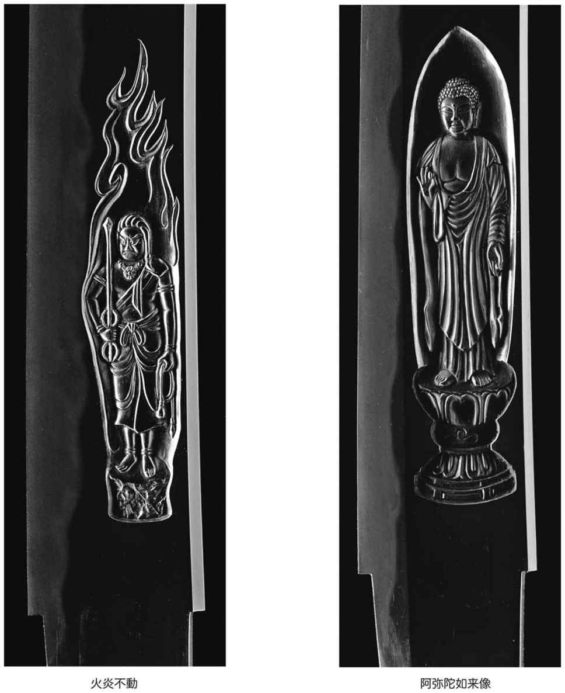

| 吉原刀匠に聞く日本刀とっておきの話 (Kindle Single) | |
| 吉原 義人 & 鈴木 重好 | |
| (2016) | |
吉原刀匠に聞く日本刀とっておきの話
吉原義人
鈴木重好
日本刀は、刃物として驚異的な性能を持つばかりでなく、武器としての機能や用途を大きく超えて、日本的感性を表現した芸術作品として世界から高い評価を受けてきました。美しい曲線を描いた優美な姿、よく詰んで質感と表現のある地鉄、元から先まですっと延びた直刃や変化に富んだ乱刃、それらの刃文を形成する匂や沸、また砂流し、金筋、稲妻などと呼ばれる「働き」（刃中に現れる微妙な変化）など一振りの刀身はさまざまな見所に溢れ、さながら一幅の風景画のように美しさをたたえています。
こうした日本刀のもつ要素は、鍛錬の仕方や焼き入れの温度管理などにより生じるもので、そこには日本人の長い間の経験と技術、伝統が生かされています。
本書では第１章で、吉原義人刀匠との対談をとおして、日本刀の"武器"としての実力や「よく切れる刀は美しい」と語る刀匠の日本刀哲学を伺います。
第２章では、吉原刀匠の実際の刀作りの工程を追います。先人の優れた技術を学び、一貫して技術追求の手を緩めず、創意と工夫を重ねる刀匠の作刀のプロセスを刀匠のコメントおよびイラストや写真を織り交ぜて紹介します。
─ 早速ですが、日本刀の刃物としての性能についてお聞きします。少し前からネット動画サイトにアップされた海外番組で紹介されている、拳銃が発射した弾丸を真っ二つにする日本刀がちょっとした話題になっています。日本刀の刃を目がけて銃を撃つと、次の瞬間、刀の後ろに幕のように垂らした白い紙に２つの穴が開く。つまり刃に当たった弾丸の痕なのです。この動画はご存じですか。
吉原 よく知っていますよ。弟子が仕掛けたことですから（笑）。あの実験で大切なのは、刃に対して正確に真正面から弾丸を当てることです。そうすれば、弾丸は鉛や銅の合金でできているはずですから、焼き入れをした刃、つまり硬くなっている鋼の相手ではありません。刀というのは、刃から切りつけると非常に強いのですが、刃とは逆側の棟、あるいは平地に衝撃を与えると、意外に弱いのです。
─ 第２章の「日本刀のできるまで」で詳しい解説がありますけど、刀は刃だけが硬いのですか。
吉原 刀の構造というのは、長い歴史の中でよく考えられていて、硬い刃の部分とそれ意外の軟らかい部分で構成されています。全身を硬くしてしまうと、かえって脆くもなってしまい、よく切れるけれど、折れもするということになり、武器としては具合がわるい。その欠点を「焼き入れ」でカバーしたのです。
炭素を一定割合含んだ鉄、つまり炭素鋼の性質を利用し、その組織が硬化する温度まで真っ赤に熱して急冷することで、硬い組織の状態を得ることができる。ただし、この冷却速度をほんの少しおそくすると組織は元の状態に戻り、硬化せず、柔軟性を失わない。こうして刀は、ものを切るときに刃が受けた衝撃を刀全体で柔軟に受け止められるわけです。
─ それで日本刀を昔から「折れず・曲がらず・よく切れる」というわけですね。
吉原 その標語のような言い方は、必ずしも当たっていないのでは......
まあ、折れずに曲がるということは十分に考えられます。
─ 昭和62年（1987年）ですから、大分前の話になりますが、刀匠の鍛えた備前伝で鉄兜を割る、いわゆる「昭和兜割り」がありました。テレビで全国放送され話題になりました（後にカンヌ映画祭でドキュメンタリー部門の「優秀賞」を獲得）。見事に成功して、鉄兜の脳天に12 cmあまりの切り込みを入れ、しかも刃こぼれ一切なく、無傷という驚くべき結果を納めました。現代刀の面目躍如たるというところですが、この兜割りというのは、実に100年ぶりだったそうですね。

吉原 公式記録では、明治19年（1886年）11月10日に明治天皇の御前で行われた「明治兜割り」以来だそうです。
─ 兜割りは、剣の達人たちの腕試し、また刀の切れ味や強靭さを試すためのものですから、試技にあたった三人は当時の達人ばかり、それぞれが頼みとする得物で挑み、結局一人榊原鍵吉（直心影流）のみが同田貫を用いて明珍作の兜を、切り口約10 cm、深さ約1.5 cmの斬り込みを入れることに成功、他の二人は失敗に終わったということですね。この同田貫の特徴は、通常の刀より幅も厚みもある剛刀で、ものの本には、かなりの蛤刃（＝刃先がＶ字ではなく、蛤のようにふっくらした形状の刃）だったということですが、やはり鉄で鉄を切るのですから、刃こぼれを防ぐためには、蛤刃が有利なのでしょうか。
吉原 「かなりの蛤刃」といっても程度問題でしょう。それは刀身に彫り物をする鏨を考えればわかりやすいと思うけど、もし鏨の先端が蛤刃になっていたら、刃が刀身に食い込まず、彫り進めることができない。同様に同田貫に極端な蛤刃がついていた場合、刃先は鉄兜に食い込むどころか、ボールのようにバウンドしてしまうことだって考えられる。
─ 吉原刀匠の場合、特に試刀のための工夫はありましたか。
吉原 身幅を多少広げたほかは通常のものと変わりません。丁子乱れの匂出来、映りの出た備前伝です。今は近所の寺に奉納してあります。兜割りというのは、刀にとってはかなり過酷な試練なのです。刀はそもそも鉄を切ることを想定していません。しかし兜のほうは矢、槍、刀の攻撃を想定している。「昭和兜割り」で用意した鉄兜は、戦国時代のもので、その形といい内部の作りといい衝撃をまともに受けないというか吸収するようになっていて、よほど的確に刃筋を立てて打ち込まない限り、刀ははじかれてしまうか、兜表面を滑ってしまう。運のいいことに、切り手の河端照孝さん（古武道天真自源流の高段者＜当時＞）のおかげでうまくいきました。
─ 鉄兜にも食い込む刃を鍛えるというのは難しいことなのでしょうか。
吉原 簡単に言いますと、きちんと鍛錬された地鉄でないと鋭利な刃はつけられません。地鉄が悪いのに無理にシャープな刃にすると、研いでいて刃先がボロボロと欠けてしまいます。それでしかたなく蛤刃になるよう研いだりしますが、そうなると見た目にシャープにならず格好悪い。見るからにシャープでよく切れそうな刃がついているのは、例えば長曽禰虎徹です。真横から見ていても、切れそうなのが分かる。
─ 冒頭の弾丸を真っ二つにする刀というのは、地鉄が良いから鋭利でも弾丸の衝撃に負けない強靭な刃がつけられたということですね。では、地鉄の良し悪しは、他にはどんなことで判断したらいいのでしょう。
吉原 地鉄がよく詰んでいるかいないかです。よく錬れて細かい肌が出ているものが良いと思います。
─ しかし、刀剣研究家や愛好家の中には地肌がよく見えたり、大柄な模様のようなパターンが出ているものを評価する場合がありますね。
吉原 そこが難しいところです。「積み沸かし」、「鍛錬」といった作業をきちんとやっていれば、刀の材料である鋼が緊密な一つの塊となるとともに鉄が含む炭素が平均化され、また不純物も吐き出した状態になりますから、本来目立った肌目など出る訳はないのですが、それでは見た目につまらないということで、わざわざ違った鋼を混ぜて鍛錬し、肌を強調するような地鉄にすることがあるのです。でも、冶金学的にはよく詰んでいる地鉄の方が優れているようです。古備前の「大包平」や真恒、また鎌倉期の光忠、長光、景光、南北朝時代の兼光などの鍛肌はいずれも細かく錬れています。また華やかな刃文ならなおさら、単純な刃文でも背景となる地鉄が細かく詰んでいるほうが刃文が引き立って綺麗に見えますよ。
─ よく沸出来とか匂出来とか言いますが、地鉄の良し悪しとの関係はいかがでしょう。
吉原 沸も匂も冶金学的には同じものです。刀の材料である鋼は、平均で炭素を0.7%前後含んでいるものなのですが、それが火床で熱せられ750度くらいになるとオーステナイトという組織に変態し、それが焼き入れで急冷されるとマルテンサイトになります。刃の部分はこのマルテンサイトの組織で出来ていて非常に硬いのです。一方、地はマルテンサイト化されず、元の組織にもどります（詳しくは第２章参照）。刃文はマルテンサイト化された刃とされなかった地との境に現れるのですが、マルテンサイトの結晶の粒がキラキラと輝いているのを肉眼で見える状態が「沸出来」、粒が見えず、全体に天の川のようにぼんやり見えるのが「匂出来」といいます。ついでながら言いますと、オーステナイトに変態するかしないかの場所に、朝靄のように白くたなびくように、あるいは雲のように見えるものが出る場合がありますが、これを「映り」と表現しています。刀を光源にかざし20-30度傾けて見ると、慣れてくると見えるようになります。
そこで、地鉄としての良し悪しですが、一概には言えませんが、あまり沸が激しくついているようなものは、刀としてみた場合柔軟性の点で気になります。というのは、焼き入れのときに地鉄を通常よりも高温で長く、といっても1-2分ですが、熱したことが考えられ、それがマルテンサイト粒を大きく育てることにつながっているので、硬くなっている組織が広がり、それだけ柔軟性を失っていると考えられるからです。見た目には、豪壮に見えるのですがね。ちなみに、こうした地鉄をもつ刀には映りは出にくいものなのです。
─ では、今度は刀身の姿と刀の機能、性能との関係について話しを進めたいのですが、進めるにあたり、古刀を念頭に伺いたいと思っています。といいますのは、刀剣界では地鉄でも、刀の姿にしても古刀をもって日本刀の達し得た頂点とする考え方がとても強く、常に古刀との比較にさらされている。こうした傾向は、ちょっと他の分野の芸術にはない特徴ですね。それが国宝刀剣をみると一目瞭然です。全122点の国宝刀剣のうちの「古刀期」──平安末期から文禄4年（1595年）──の割合は実に97%に迫ります。しかも江戸時代以降の新刀と新々刀の刀は1点たりともありません。ちなみにこれを国宝絵画（海外の作品を除く）で見てみますと、日本刀の「古刀期」に当たる作品が80%、新刀と新々刀期に当たる作品が21点も含まれています。
吉原 古刀期のものに名刀の多く含まれていることは疑いを入れませんし、優れた古典に学ぶことは刀剣にあっても絶対に必要なことです。しかし一方、盲目的に今日に伝わる古刀の姿をそのまま受け取ることには疑問が残ります。古い刀は制作された当時の姿をとどめているものはほとんどなく、中には厚みも幅も半分以下になっているものもあります。刀は焼き入れをしたときに一番良い形になっているものですが、それが使うにつれ切先から減り始め、やがては焼刃がなくなって俯いてくる。そうしたことが古い刀には起こっていることを学ぶ側や見る側は考慮する必要があります。焼き入れて出てきた新作刀が摩耗し、疲れた姿をしているのはいかにも不自然です。
─ では刀匠がこれぞと思う体配を２、３挙げていただけますか。
吉原 来国行とか綾小路定利とか......肝心なのは、「機能美」を追求する刀という工芸品では、当たり前のことですが、まず使いやすくなくてはならないということです。使いやすければ良く切れ、美しくもあるのです。使いやすくするためには、重心は元の方にあったほうがバランスの点でいいし、反りは手に持って振ったときにスムーズであり、鞘にきちんと収まるようにする、そのためには平均化したカーブを描いていなければいけない。また中心は刀身の反りの延長になっているのが自然の体配なのです。ただし、中心についていえば、馬上で片手で持って使うこともあったと考えられている太刀の場合は、確かに中心は刀身の反りの延長になっているのが使いやすいのですが、打ち刀（いわゆる刀）では、両手で持つことが多くなったとされていて、その場合には、中心自体は反らずに真っ直ぐの方が持ちやすい。それで慶長磨り上げ（慶長年間＜1596-1615年＞に行われた、長寸の太刀などを好みの長さに詰める方法や詰めた刀）では古刀の太刀の中心を真っ直ぐに直すことが行われたのです。それはともかくとして、優れた古刀は「用」に基づいた「掟」がきちんと守られています。刃物の合理性を追求した刀は、あたかも走ることを追求したF1マシンのように機能美を備えると思いますよ。
─ 先ほどの地鉄が良く鍛えられて詰んでいれば、シャープな刃がつき、良く切れ、見た目にもスッキリする。刀姿では、理にかなった姿ならば機能的であるから良く切れる。つまり「切れる刀は美しい」ということなのですね。
（文責 鈴木重好）
日本刀の原料「玉鋼」
現代の刀工は、刀剣造りの原料に玉鋼を用います。玉鋼とは、炭素含有量1.0-1.5%の鋼のことで、刃物に適する化学組成をもっていて、現在はタタラ製鉄法によってつくられています。タタラ製鉄法とは、およそ14トンの砂鉄と15トンの木炭を三昼夜にわたって少しずつ交互にタタラ炉に加え、比較的低温で徐々に砂鉄を還元させ、半溶解状の砂鉄の塊であるケラを得る製鉄法です。そのケラを粉砕選別して日本刀の材料とします。ケラはおよそ2トンになりますが、刀の材料に適する条件（炭素量や不純物の量）をクリアする量となるとその1割くらいに過ぎません。
水減し
玉鋼を材料として使えるようにするための準備です。玉鋼を熱しては、ハンマーで叩き、また熱しては叩くという作業を繰り返し、3-5 mm程度の薄さになったところで、熱して水に入れ、急冷します。
水減しの段階では、炭素含有量の高いところも低いところも、不純物も混在している状態です。
小割り
水減しで煎餅状になった玉鋼を、2-3 cm角に小割りすることを言います。小割りするとき、割れやすいか否かで炭素含有量を判断します。割れやすい部分は含有量が高く、その反対は低く（0.5%以下）なります。割れやすく、破断面が光って綺麗なものは含有量が1%以上あり、皮鉄（＝刀身を作るときに、柔い心鉄を外側からくるむ、硬い鉄）に使い、粘りがあって割れにくく、くすんで見えるところは低含有量で不純物を含むところですので心鉄にします。吉原刀匠は、鍛錬を通じて失われる炭素量を念頭に、ここでは含有量1.0-1.2%を皮鉄用にします。そして鍛錬の最終段階である焼き入れ時には含有量0.7%になるように調整していきます。刀工によって、この含有量に微妙な違いがあります。
テコ台をつくる
後の「積み沸かし」作業に備えてテコ台をつくります。これは後で刀身となる材料の一部になりますので、皮鉄と同じ良質の玉鋼でつくりますが、取手は切り離されて刀身とは関係なくなりますので、材質にこだわる必要はありません。
積み沸かし
鍛錬前の重要な作業が積み沸かしです。テコ台に小割りした皮鉄用の小片3、4 kgをきっちりと積み上げ、それを濡らした和紙でテコ台ごと包み、それに藁灰をまぶし、泥汁をかけたら火床に入れ、熱します。明るい黄色から白熱となる温度（1250-1300度前後）で取り出します。この温度になると、まるでやかんのお湯が煮立つような音が聞こえ、手にグズグズと振動が伝わってくるので、熟練の刀工ならば、その感覚で、積み上げた小片が内部まで十分に沸いたことがわかるそうです。取り出した後は、金床に乗せ、小割りした小片がひとつの塊になるよう素早く叩きます。そしてまだ鉄塊が赤熱のうちに、また藁灰をまぶして火床に戻します。これを数回繰り返し、玉鋼の段階では抜けきらなかった不純物をさらに取り除きます。不純物の溶解温度は、この沸かしの温度より低いため、沸かしが的確にされていれば、積み上げた煎餅層の間から溶け出していくものなのです。
和紙に包み、藁灰をまぶし、泥汁をかけるのは、鋼と空気を遮断し、脱炭を防ぐためのものです。積み沸かしは大変重要な作業だけに、失敗すると致命傷となり、その後の作業ではカバーしきれないと吉原刀匠は言います。
鍛錬
日本刀が世界でもユニークな刃物となったのは、鍛錬という作業に負うところが大きいでしょう。鍛錬することによって日本刀の鋼に粘りが生じ、刀となったとき、その地肌に柾目や板目に似た肌模様を生じさせ、日本刀に鑑賞する楽しみを与えたからです。この作業のそもそもの目的は、積み沸かしでは十分に精錬できなかった不純物を叩き出し、炭素量を平均化させることにあります。
鍛錬は、刀匠一人ではできない作業です。そのため「向こう槌」と呼ぶ助手を相手に行いますが、向こう槌は、ある程度の熟練度が要求されます。というのも、火床から引き出された赤熱の鉄塊の表面目がけて素早く、垂直に槌を振り下ろさなくてはならないからです。また力加減を調節しながら、刀匠の呼吸に合わせて打つ必要があります。こうしたことから"相槌を打つ"という表現が生まれました。
鍛錬には、「下鍛え」と「上げ鍛え」があります。以下その説明となりますが、刀工や流派により作業に若干の相違があります。
下鍛え
鍛錬の前半の工程で、折り返し鍛錬を6回ほど繰り返す作業です。積み沸かしで塊となった鋼を火床で熱し、金床に載せて打ち伸ばしたら、その真ん中に鏨を据え、それを向こう槌に打たせて刻みを入れ、二つ折りにし、折り返した面がしっかりと密着するようにします。このとき隙間があると、後で傷などになりますので、注意が必要です。吉原刀匠は、ここでも藁灰をまぶし、泥汁をかけて火床に戻しますが、それでも一回の鍛錬で、ほぼ0.03%の炭素を失うといいます。
折り返しの方法は、テコ棒に対して直角になる方向に折り返す方法と平行方向に折り返す方法があり、流派や刀工により異なります。吉原刀匠の場合、最終の折り返しを終えたら、鏨を入れて3分割し、テコ棒から切り離します。
上げ鍛え
下鍛えによってできた材料をさらに折り返して鍛錬し、最終的に皮鉄の材料としてふさわしい鋼に仕上げる作業が上げ鍛えです。刀匠の場合、棒をつけた新たなテコ台に、他の下鍛えによってできた小片を組み合わせて4つの小片にして積み上げ、藁灰と泥汁でコーティングしてから火床で熱し、引き出して向こう槌に打たせます。これを6、7回繰り返し、最終的に炭素含有量を0.7%くらいになるよう調節します。ここで大切なことは、折り返し鍛錬によって鋼を隙間や亀裂の無いひとつの塊とすることです。
折り返しの回数は全てで13、14回ほどで、13回では8,192の層、14回ではその倍の16,384層となります（コラム１）。この回数の差は刀身になったとき、地肌の細やかさの違いとなって現れますので、回数を増やせば増やすほど肌目が細かくなりますが、細かすぎると見えづらくなり、「無地肌」と呼ばれたりします。
吉原刀匠は、折り返し鍛錬の回数と強さの関係を調べるため、折り返し１回毎にサンプルをとって、引っ張り強度や曲げに対する強度を調べたところ、およそ13回で最高の強度に達し、それからは次第に下がっていくという結果を得たといいます。
心鉄鍛え
刀身は、基本的にはその外側となる皮鉄と皮鉄に包まれて内側に入り込む心鉄とで構成されます。なぜ刀身は、すべて皮鉄だけで造らず、心鉄との二重構造にするのかということの意味については、コラム２を参照してください。
心鉄の材料は、「小割り」のところで、炭素含有量が少ないため皮鉄の材料としては除かれた部分を使います。吉原刀匠は、炭素含有量が0.5%ほどの玉鋼1 kgほどをテコ台にのせ、折り返し鍛錬を10回ほど行い、炭素含有量を0.2-0.3%まで下げます。その結果鍛錬された鋼は重さが二分の一ほどに減ります。
心鉄と皮鉄を組み合わせることで、日本刀は強靭さと柔軟さという相反する特性を併せ持つことに成功したといわれます。皮鉄は、炭素含有量が高く、焼き入れで強靭となり、心鉄は、炭素含有量が低いため、焼きが入らず軟らかい。その性質の異なる鋼を巧みに組み合わせることで、刃（皮鉄）は鋭い切れ味を示し、刀身に加わる衝撃は心鉄が吸収する。これが「折れず、曲がらず、よく切れる」のメカニズムとされてきました。
しかしこれはどこまで真実なのか釈然としないと吉原刀匠は言います。優れた材料の入手が難しかった初期の頃は、心鉄は単なる「増量材」で、倹約のため質の高い鋼は皮鉄だけに使い、質の劣る鋼を中に入れた、いわば「あんこ」であると。当時の心鉄は鍛錬されていないことからも、そう考えることができます。近世になると心鉄も鍛錬され、より弾力性を増し、刀は折れにくくなったといわれています。しかし、吉原刀匠は刀一振りをすべて皮鉄で作ったことがあり、心鉄を入れた刀身よりも丈夫になるケースがあることを発見、あらためて日本刀には解明されていないことの多いことに気づかされたといいます。
造り込み
造り込みとはこれまで鍛えてきた皮鉄、心鉄、あるいはそれ以外の鋼を組み合わせて刀身を構成することをいいます。刃物である刀は、内部を比較的軟らかい心鉄とし、それを包むように外側を硬い皮鉄とするのが基本です。この基本に沿って、いくつかの造り込みがあります。「甲伏せ鍛え」、「本三枚鍛え」、「四方詰め鍛え」などがその代表的なものですが、まず最も一般的なのが「甲伏せ鍛え」で、これは皮鉄を長さ約15 cm、幅約10 cm、厚さ1.5-2 cmの長方形に薄く伸ばしてＵ字形にし、それでテコ棒をつけた棒状の心鉄を包み込むようにし、藁灰と泥汁をかけて沸かしながら、皮鉄と心鉄を一体にし、長さ30 cmぐらいまで細長く打ち伸ばしていくやり方です（コラム３）。「本三枚鍛え」は、心鉄を刃鉄（＝刃となる質の高い鋼）と皮鉄（両側から心鉄に貼り付ける鋼）の三方から包む構造をもつもの（コラム４）。さらにもうひとつ棟側に別の鋼を取り付けるのが「四方詰め鍛え」です。いずれの構造においてもそれぞれのパーツが一体となるよう十分に沸かし、素早く打ち伸ばすことが肝心ですので、ここでも向こう槌との共同作業となります。
質の良い材料の入手が容易ではなかった古刀期の古い刀では、材料を節約するために図５のように皮鉄を少なくし、心鉄の量を増やしたものが散見されると吉原刀匠は言います。
心鉄は、刀身となったとき柾目になるように使いますので、刀剣鑑定家や研究者が「鎬地には柾目が現れ、平地は板目となり......」と評するものの中には、実は皮鉄を節約している刀身も含まれていると考えられるのです。
鎬地は、研師により「磨き」がなされる場所で、磨き棒という鉛筆のような形の鋼の棒で、地肌の鍛え目を完全にはつぶさず、鏡面のように仕上げますので、綺麗に見えますし、刀の強度の点からみても、ここに心鉄が出てきても問題はないと考えられます。心鉄の量を多くしたり、皮鉄の量を少なくするために薄く使ったりする刀は、戦国時代には、数打ちもの（安価な大量生産刀）でなくとも、大量に出回った肥前刀などに多く見受けられるといいます。
甲伏せ鍛えでは出なくて、本三枚鍛えだから現れることのある「働き」があります。それは刃と地との境に生じる「金筋（黒く輝いている直線状のもの）」や「芋づる（太く、屈折した線状のもの）」です。なぜ本三枚鍛えに限るのか、その理由は、本三枚鍛えでは、造り込みを行う際に、刃鉄と皮鉄を接着させるために、間に鉄蝋（＝ホウ酸やホウシャ）という粉をつけて加熱し叩きます。鉄蝋は溶けてなくなりますが、ときには金筋や二重刃（＝本来の刃文に沿って現れるもう一つの刃文）になることがあります。
素延べ
刀の反りを除き、ほぼ刀の出来上がりの姿、寸法にする作業です。素延べによって長さ、重ね、身幅などが決まり、ほぼ最終的な刀の形になります。吉原刀匠は、まず中心の成形から始め、本体へと進みます。水で濡らした金床に、火床から引き出した白黄色の炎を上げる鉄塊（約1,100度）を据えると、やはり水に濡らした槌で叩くのですが、水蒸気の噴き出す力と槌で打つ衝撃で、それまでの工程で鉄塊の表面に付着してきたカスが、かさぶたのようにはがれていきます。刀の色が暗赤色（約700度）くらいになるまで打っては、また火床に戻します。吉原刀匠は必要に応じて向こう槌を使います。この工程は、刀工の熟練の技と経験と細心の注意が必要とされます。正確に適切な力で槌を打ち、刀の肌に傷をつくらないこと、自分が目標とする刀姿に打ち出すなどの技術が求められます。
火造り
ここからは刀工一人の作業となります。素延べを終え、出来上がりの９割近い姿になった刀をさらに完成形にもっていく作業で、例えば、ほとんどの太刀や刀の造りである「鎬造り」の刀の場合、刃のつく方を薄く打ち出していき、棟も多少薄く打ち出し、鎬の線が出るよう仕上げます。鎬造りには刀姿を形成するための重要な線がいくつかあります。まず刃の線そして鎬、棟角、庵の４つの線です。刀工は定規など一切用いず、自らの目と腕で打ち出すのです。また、もし刀工が古備前をねらっているなら、刀姿を古備前の作風に仕立てることが要求されます。まさに刀工の感性と技が試される場であるわけです。
切先の打ち出し
切先を作るための一つのやり方として、先端を斜めに切り落とす方法があります（図７）。切り落とし方は、出来上がった刀とは形が反対になるように刃側が長く、棟側が短くなるようにし（a）、長い方、つまり将来刃になる側を小槌で叩きながら徐々に上に持ち上げ（b）完成形にします（c）。こうすることで、武器としての刀の大変大切な場所である切先は皮鉄に包まれることになるわけです。切先が出来上がると、棟側と刃側の区を切り、最後に刀身全体を暗赤色（650度）くらいに熱して、そのまま時間をかけて冷まし、鉄の組織を安定させます。
荒仕上げ
火造りで形はほぼ完成に近いものになりますが、刀身表面はまだ荒れた状態ですので、「セン」という両端に取手のついた刃物で刀の表面をカンナがけし、棟はヤスリがけし、続いてカーボランダム砥石で全体を研ぐ。この段階ではまだ刃はつけないでおきます。
土置き
焼き入れをおこなう前に「土置き」という刀身に粘土を塗る作業をします。焼き入れとは真っ赤に熱した刀身を水で急冷することによって、刃を強靭に、その他の部分に剛性を持たせる作業をいいますが、その強さと粘りは、刀身の冷えるときの速度に応じて生まれます。この冷える速度を調整する重要な役目を担っているのが土置きで、塗る粘土の厚みによってその調整が可能になります。薄ければ急冷し、厚ければゆっくりと冷えていきます。
この土置きの原理を利用した焼き入れで「裸焼き」（コラム５）と呼ばれる、粘土を一切塗らずに、高温に熱した刀身をそのまま水中に入れる焼き入れ法があります。刀身は水中に入れると細かな気泡に包みこまれますが、刃の部分は薄いので急速に冷めてしまうため、気泡は刀身の厚みが増す平地から棟にかけて盛んに発生します。そのため気泡がクッションになって急冷が妨げられ、結果として、急冷される刃には焼きが入り、されなかった平地、鎬地、棟などには焼きが入らないことになります。これは土置きで、刃には薄く、その他の部分には厚く塗った粘土がもたらす効果と同じです。
土置きはこうした冶金学上の変化を促進するほか、実はもうひとつ日本刀に欠かせない重要な役目を負っています。それは、日本刀の象徴である刃文の型を決定するという大役です。刃文といえば、五か伝（＝古刀期に発達し、日本刀の歴史を通して基本となる五つの伝法）では、山城伝は直刃、大和伝も直刃、備前伝は丁子乱れ、相州伝は乱れ刃、美濃伝は尖り刃交える乱れ刃という具合に作風に応じて焼かれてきましたが、これは土置きによって生み出されてきたものなのです。刃文とはかんたんに言えば、焼きの入った刃と入らなかった部分との境に出る境界線です。この境界線には直線もあれば大波も小波もありますが、すべて基本的には土置きの、粘土の塗り方で決まります。塗る場所と厚さを見極めることで焼き入れをコントロールし、境界線を描いてゆく、それが土置きの役目なのです。
焼刃土の主成分は、粘着性の高い粘土で、これに大村砥という砥石の粉と木炭の粉を混ぜ、水を加えてよく練ってから使います。粘土は熱せられると焼きしまって刀身に密着し、砥石の粉は焼刃土の収縮やひび割れを防ぎ、木炭の粉は急激な温度変化を和らげる断熱材のような働きをすると考えられています。焼刃土の成分は、伝法によって焼き入れ温度が違いますので、刀工の独自の工夫によって調整され秘伝とされますが、肝心なことは高温に耐え、はがれおちにくいことです。
吉原刀匠はヘラに粘土をすくい、それを刃先から刃文が現れるあたりの高さまで帯状に薄くのばし、その他の部分には1-1.5 mmくらいの厚さに塗ります。さらに刃文に変化や微妙な味付けをするために、ヘラの刃にあたる部分で、刀身の刃から棟方向に線を引くように焼刃土を置いていきますが、それはまるで幾何学文様のように見えます。刀工が土置きによって想定した刃文は、必ずしもそのとおりに出てくるとは限らないのですが、吉原刀匠は、湾れや互の目といった比較的単純な刃文は、完全にコントロールできるといいます。
平成27年（2015年）の公益財団法人 日本美術刀剣保存協会が主催する「新作名刀展」の表彰式の場で「作刀の部」の審査員講評として、吉原刀匠は「裸焼き」について次のように述べています。
入賞者のなかで、 焼刃土を置かずにそのまま焼き入れをする、いわゆる「はだか焼」を焼いて出品している方がいました。はだか焼の刃文は、水中に入れた刀身から発生する気泡によって冷却温度が調節され刃文ができるもので、全く作者の美意識の入れられない刃文です。
焼刃というのは作家の個性が一番表現されるところです。長光も景光もそれぞれちゃんとした個性的な刃を焼いています。そういう意味で、はだか焼では作家自身の個性が出ないと思います。
焼き入れ
日本刀でいう焼き入れとは真っ赤に熱した刀身を水で急冷することで、刃を強靭に、その他の部分に柔軟性や剛性を持たせる熱処理をいいます。これこそまさに日本刀製作のクライマックスであり、それまで手間暇かけて鍛え上げてきた地鉄が「刀」として生命を受ける儀式といっていいでしょう。儀式にふさわしいかどうか分かりませんが、焼き入れは、日没後照明を落として行われます。刀工は火床で赤らめた刀身のわずかの色合いの差で的確に温度を読まねばならず、そのために闇が必要なのです。
焼き入れは火床にくべる松炭の準備から始めますが、吉原刀匠は炭のサイズを通常より小さく、角砂糖ほどの大きさに砕きます。これは土置きした焼刃土が剥がれおちないための配慮です。焼き入れで最も難しいのは、70 cm前後の刀の全身をくまなく必要な温度まで熱することで、刀は場所によって厚みも幅も違い一様ではありませんので、正確に目標とする温度に熱するには熟練の技と経験を必要とします。
吉原刀匠は、備前伝で「映り」（コラム６）を狙いますので、焼き入れの温度の目安を、刃で約800度、鎬の下で750-760度、棟で700-720度という具合に熱します。こうした温度の使い分けは、急冷したときに、焼刃土の効果とあいまって、刃は焼きが入って強靭となり、映りの生じる鎬の下方、つまり刀身の中央あたりには粘りが生まれ、棟も適度な柔軟性を保つことを意図しているからです。
鋼というのは大変おもしろい物質で、温度によって性質が変わり、また焼き入れのような熱処理でも変化します。常温では、フェライトとパーライトから成る組織ですが、高温になるとオーステナイトという組織に変わります。何度でオーステナイトになるかは、鋼の炭素含有量によって異なりますが、含有量0.7% ほどでは、720-730度くらいとされています。そしてオーステナイト状態の鋼を急冷するとマルテンサイトというとても硬い組織となり、この熱処理がいわゆる「焼きが入った」といわれる状態です。吉原刀匠が、刃先を800度という高温にするのは、その組織を十分に均一なオーステナイトに変態させ、それにより急冷で確実にマルテンサイトを得るためです。ちなみに冶金学的には炭素含有量0.7%の場合、オーステナイト組織がマルテンサイトに変態するには、およそ秒速200度以上の冷却速度が必要とされています。
「土置き」のところで、刃文は土置きによって創り出されると書きました。これを冶金学的に見てみますと、刃文とは、焼き入れによってマルテンサイトに変態した組織が変態していない組織との境目に現れた、いわば境界線と表現することができます。ですから刃文をデザインするとは、土置きによってマルテンサイト化させる部分とさせない部分をつくりだすことに他なりません。ここで興味深いのは、数ある刃文の中で、直刃は刃に沿って真っ直ぐに伸びる線だから、土置きもさぞ単純だと思われがちですが、長い刀の端から端までを均一な炭素含有量に鍛えるのは熟練者でもなかなか難しく、含有量が極端に違えば、直刃が途切れたり、歪んだりすることにもなりかねず、その意味で思うほど簡単ではないということです。
刃文のパターンとは別に、刃縁（＝刃文の稜線にあたる部分）の状態によって刀を「沸出来」とか「匂出来」と表現しますが、これは刃文の線を構成しているマルテンサイトの粒の大小に関して述べた表現です。粒が一つ一つ星のようにキラキラ輝いて見える状態が沸出来で、粒としては見えず、全体に天の川のようにぼんやりと見えるものを匂出来といいます。沸出来では、焼き入れの温度をより高くするため、それに見合うよう炭素含有量を多少低くした地鉄が必要であり、一方匂出来では、比較的低めの温度で焼き入れをするため、地鉄の炭素量は多少高めとなります。
もうひとつ焼き入れで重要なことは、日本刀独特の「反り」が焼き入れの結果生まれるということです。オーステナイトとなった刃は急冷でマルテンサイトに変態することは書きましたが、マルテンサイト化することで組織は膨張し、棟側に反るのです。反り具合の調整は鍛冶研ぎの後に行います。
鍛え肌（地鉄の表面に現れる模様）とは関係なく、焼き入れによって地に現れるうっすら白い靄のように見えるものを「映り」といいます。映りが帯状に出るものを「棒映り」といい、大小の模様のように出るものを「乱れ映り」と呼びます。
映りは、冶金学的には地鉄の組織がパーライトからオーステナイトに変態するその過渡的状態で焼き入れされたときに現れるもので、映りの出たところは、それが刃中でも平地でも鎬地でも柔軟性が増すと吉原刀匠はいいます。
映りは、新刀の時代を最後に絶えて久しい"まぼろしの技"とされてきましたが、昭和47年（1972年）に若き日の吉原義人・荘二兄弟刀匠によって再現に成功し、当時の刀剣界でセンセーショナルな出来事となり、さらにこの快挙は刀剣関連紙のみならず、毎日新聞（4月19日付）やサンケイ新聞（現・産経新聞 6月14日付）他一般紙でも取り上げられました。「刀剣春秋」（3月1日付）は、映りを再現した研究会の模様を伝え、日本刀研究の権威佐藤寒山氏（1907-78年）の立ち会いのもと、義人・荘二兄弟刀匠の指導をうけた刀匠たちはいずれも映りの再現に成功したと伝えています。また同紙は、5月1日付の「新作名刀展」の結果を報じる記事で文化庁長官賞に輝いた吉原刀匠を「今年のナンバー・１は鎌倉中期の備前物を狙って備前伝の"映り"を再現した吉原義人氏（東京）」と報じています。
焼き戻し
これは焼き入れとセットになった工程です。焼き入れの急激な温度変化で焼きが入ったところと入らなかったところができ、金属組織としての歪みが生じ、脆くなりますので、これを180度くらいの低い温度で赤らめ、常温で冷ますことで歪みを除き、組織として安定したものにする作業です。刀に限らず、焼き入れをする刃物には欠かせません。
反り直し
焼き入れでついた反りは、浅かったり、深すぎたり、偏りがあったりと一様ではありません。それを矯正して求める反りにする作業が反り直しです。反りは基本的には槌で叩きながらこまめに修正し、すべての線──棟、鎬、刃のライン──を歪みなく反りに合わせます。反りが足りないときは銅のブロックを火床で赤らめ、それに刀身の棟をあて、水で冷却して反りを加えます。これを何箇所かやるうちに反りを補正することができます。
鍛冶研ぎ（鍛冶押し）
焼き入れを終え、反りや曲がりなどを修正し終えると、刀工は自ら研ぎを行い、生まれ出たばかりの刀の出来映えを確認します。研師に出す前に自ら行うこの研ぎを鍛冶研ぎといいます。刀工は刃文の状態や映りなど確認するとともに疵や不具合がないか入念に調べそして刀の姿や肉置（＝刀身の立体的なバランス）を整えます。
刀工によっては鍛冶研ぎせず、いきなり研師に持っていく人がいますが、それでは勉強になりません。
彫刻を彫る
彫刻には樋と彫刻があります。刀身の鎬地や平地に彫った溝を樋といい、これはもともと刀の重量を軽減するために、およそ鎌倉中期ごろより始められるようになったというのが研究者たちの説で、装飾を目的とするようになったのは、それよりずっと後のことだといいます。
彫刻は、刀工が自ら彫る場合と専門家にまかせる場合とがあり、またはじめから入れることを想定した場合と後になって疵などを隠すために彫る場合とがあります。樋はペンなどで下絵を描き、樋センという道具で溝を掘るように棒樋を彫るなどします。
彫刻では伝統的なモチーフである不動明王、阿弥陀如来、素剣や三鈷柄付剣、倶利迦羅（＝剣巻き龍）などがあり、吉原刀匠は、伝統的なもののほかに斬新なデザインの動物や植物なども彫ってきました。彫刻は様々なサイズや形の鏨を駆使して仕上げます。

中心の仕上げ：鑢をかける
刀身が出来上がりますと、注意深く細部にいたるまで点検し、問題がなければ中心に鑢をかけます。鑢は、時代、流派、刀工によって異なり、古い刀の場合はそれらが鑑定などの手がかりになります。吉原刀匠の場合、斜めに多少粗く一定方向にかけます。
鑢がけを終えると、ドリルで目釘孔を開けます。目釘によって鞘に中心を固定するための孔です。
中心の仕上げ：銘を切る
銘には、太刀銘と刀銘があります。太刀銘は太刀の刃を下にして腰に佩いた場合、外側にくる銘、刀銘は刀、脇差、短刀などを刃を上にして腰に差した場合、外側にくる銘をいいます。またそれぞれに表銘と裏銘があり、表銘には刀工の名、生国、居住地、受領官職（主に新々刀以前）、裏銘には、制作年紀、依頼者名などがきます。吉原刀匠は、小さめの鏨と槌で、こうしたものをそのときどきの状況で切り分けます。
（文責 鈴木重好）
吉原義人（よしはら・よしんど）
昭和18年 東京・世田谷区に生まれる。
昭和28年 刀鍛冶であった祖父吉原国家を小学校4年生ごろから手伝うことで、刀作りを体で覚える。
昭和40年 文化庁長官より日本刀製作承認を受ける。
昭和46年 現在の地葛飾区高砂に鍛錬場を開く。
昭和47年 東都刀匠会の研究会にて、江戸時代より絶えていた幻の技「映り」の出し方を公開指導する。
昭和57年 公益財団法人日本美術刀剣保存協会新作刀展覧会の無鑑査となる。無鑑査になるまでの受賞（）内は回数：努力賞（3） 優秀賞 （3）名誉会長賞（1） 寒山賞（1） 文化庁長官賞（2） 高松宮賞（3）
昭和62年 100年ぶりとなる「兜割り」に成功。TBSのドキュメンタリー番組となり、後にカンヌ映画祭のドキュメンタリー部門で「優秀賞」を受賞。
平成２年 ロサンゼルスのジャパン・エキスポに招待され、現代刀の展示と日本刀に製作を実演する。
平成３年 文化庁の判定会議である重要文化財に関する専門審議委員に就任。平成７年公益財団法人日本美術刀剣保存協会新作刀展覧会の審査員、同協会の評議員に就任。
平成10年 東京都葛飾区指定無形文化財保持者第一号に認定される。
平成16年 東京都指定無形文化財保持者に認定される。
鈴木重好（すずき・しげよし）
昭和25年 東京都に生まれる。
昭和58年 講談社インターナショナル株式会社に英文書編集者として入社。
平成10年 同社を定年退職。入社から定年退職まで、一貫して英文書を担当。担当分野は、日本刀関連、美術、工芸、建築など。現在はフリーランスの編集者。
講談社インターナショナル在職中に編集した刀剣関連の主なタイトル
The Craft of the Japanese Sword by Yoshindo Yoshihara, Leon and Hiroko Kapp
Modern Japanese Swords and Swordsmiths: From 1868 to the Present by Yoshindo Yoshihara, Leon and Hiroko Kapp
The Connoisseur's Book of Japanese Swords by Kokan Nagayama
The New Generation of Japanese Swordsmiths by Tamio Tsuchiko
The Art of Japanese Sword Polishing by Setsuo Takaiwa, Yoshindo Yoshihara, Leon and Hiroko Kapp
The Yasukuni Swords: Rare Weapons of Japan 1933-1945 by Tom Kishida
Facts and Fundamentals of Japanese Swords: A Collector's Guide by Nobuo Nakahara
本書を出版するにあたりお世話になった方々
撮影： 吉原義一
編集協力： 河端照孝
和鋼博物館
図版提供： Saviolo Edizoni
Kodansha USA, Inc.
表紙イラストレーション： 越井 隆
表紙デザイン： 五味朋代（フレーズ）